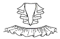
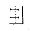
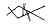
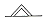
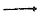

패션머천다이징산업기사 (2007-03-04 기출문제)
1과목: 패션마케팅
1. 패션유통경로 중 의류제조업체가 기획과 생산뿐만 아니라 판매에도 책임을 지는 형태로, 팔다 남은 상품의 재고는 전량 제조회사가 책임을 지는 제도는?
- 위탁판매제도
- 완사입제도
- 위탁사입제도
- 완판매제도
(정답률: 알수없음)

2. 광고의 4대 매체에 포함되지 않는 것은?
- 잡지
- 신문
- 전화
- TV
(정답률: 알수없음)
3. 랄프로렌이나 (주)쌍방울의 키이스와 같은 이미지 브랜드의 경우 적합한 상품군의 구성은?
- 시즌별로 유행에 맞춰 구성한다.
- 베이직, 뉴베이직, 트랜디한 상품에 동일한 비중을 둔다.
- 트랜디한 상품보다 베이직이나 뉴베이직 상품에 더 비중을 둔다.
- 베이직이나 뉴베이직 상품보다 트랜디한 상품에 더 비중을 둔다.
(정답률: 알수없음)
4. 패션업체가 광고 예산을 책정하는 방법 중 매출액 비례법 (percentage of sales rule)에 대한 설명으로 틀린 것은?
- 광고비용, 판매가격 그리고 제품의 단위당 이익 사이의 관계를 고려하여 촉진예산을 산정할 수 있다.
- 경쟁사들간에 광고예산 규모의 책정에 있어서 어느 정도 안정성을 유지할 수 있다.
- 매출을 광고의 원인으로 보기 때문에 매출액이 감소하는 시점에 광고비용을 무조건 삭감해 버리는 결과가 초래된다.
- 회사 자금사정상 다른 긴급한 비용을 모두 책정한 다음 나머지를 광고비용으로 책정하는 방법이다.
(정답률: 알수없음)
5. 국제양모사무국을 뜻하는 약자는?
- I.I.C
- I.W.S
- C.A.U.S
- J.A.F.C.A
(정답률: 알수없음)
6. 고객관계관리 (CRM : Customer Relationship Management) 마케팅의 대표적 특징에 해당되지 않는 것은?
- 고객의 1:1 관리
- 고객의 시간가치 존중
- 고객 세그멘테이션
- 고객에게 가장 편리한 채널 제공
(정답률: 알수없음)
7. 패션 리테일 마케팅의 특징에 대한 설명으로 틀린 것은?
- 미래의 예측능력이 경쟁을 좌우한다.
- 예술과 과학의 양면성이 있다.
- 가설과 검증의 반복과정이다.
- 30~40%의 검증으로 전체를 파악해야 한다.
(정답률: 알수없음)
8. 제품 포지셔닝(brand position)의 의미는?
- 상가에서 매장이 위치한 위치
- 백화점에서 자기 브랜드의 제품이 위치한 위치
- 특정제품이 경쟁브랜드들과 비교하여 고객의 마음속에 차지하고 있는 상대적 위치
- 품종별 브랜드 구분에서 자사 브랜드 제품의 위치
(정답률: 알수없음)
9. 최적의 시장세분화가 이루어지기 위한 바람직한 조건이 아닌 것은?
- 세분된 부분시장의 규모와 구매력의 크기는 측정될 수 있어야 한다.
- 세분된 부분시장에 마케팅 프로그램이 효과적으로 접근할 수 있어야 한다.
- 세분된 부분시장내 고객들은 서로 다른 반응을 보이도록 해야 한다.
- 세분된 부분 시장은 충분한 이익을 가져올 수 있을 정도로 수익성과 가치가 있어야 한다.
(정답률: 알수없음)
10. 상표 대안 평가의 비보완적 평가방식 중 소비자가 자신이 가장 중요시하는 평가기준에서 가장 우수하다고 평가되는 상표를 선택하는 방식은?
- 사전편집식(lxicographic rule)
- 연속제거식(sequential elimination rule)
- 결합식(conjunctive rule)
- 비결합식(disconjunctive rule)
(정답률: 알수없음)
11. 유통업(도 ㆍ 소매업)에서 머천다이징을 담당하는 사람들을 의미하는 것은?
- 리테일 머천다이저
- 어패럴 머천다이저
- 코디네이터
- 패션 디자이너
(정답률: 알수없음)
12. 머천다이저의 직무에 포함되지 않는 것은?
- 소비자의 장기적 유행분석
- 원부자재의 발주 및 구매, 구매업무의 조정
- 시즌마감 후 차기 상품기획을 위한 결과분석
- 인기품에 대한 신속한 재생산 등 결정
(정답률: 알수없음)
13. 다음 중 리테일 머천다이저의 업무가 아닌 것은?
- 재고관리
- 판촉계획
- 구매계획
- 생산계획
(정답률: 알수없음)
14. 패션마케팅 믹스 중 제품(product)의 속성에 포함되지 않는 것은?
- 패션상표
- 판매조건
- 포장 및 라벨
- 디자인
(정답률: 알수없음)
15. 패션관련정보 중 소비자 정보에 해당되지 않는 것은?
- 라이프스타일 분석
- 착용경향 조사
- 구매 동기 및 구매 패턴 조사
- 표적시장의 확인
(정답률: 알수없음)
16. 패션 트랜드 정보를 구분하는 요소가 아닌 것은?
- 색채의 경향, 실루엣의 경향
- 메이크업의 경향, 스타일의 경향
- 패션인플루언스, 디테일의 경향
- 광고의 경향, 패션 코디네이션의 경향
(정답률: 알수없음)
17. 마케팅에 대한 측정수준이며 교환당사자간 가치의 매매를 의미하는 것은?
- 교환
- 수요
- 공급
- 거래
(정답률: 알수없음)
18. 표적시장을 설정하는 목적은?
- 누구의 어떤 욕구를 만족시킬 것인가를 명확히 한다.
- 어디에서 팔 것인가를 명확히 한다.
- 누구를 통해서 팔 것인가를 명확히 한다.
- 언제 팔 것인가를 명확히 한다.
(정답률: 알수없음)
19. 리테일 머천다이징의 과정으로 올바르게 나열된 것은?
- 정보전략 - 점포전략 - 표적고객 설정 - 판매계획 - 상품계획 - 구매활동 - 프로모션 전략
- 정보전략 - 표적고객 설정 - 점포전략 - 판매계획 - 상품계획 - 구매활동 - 프로모션 전략
- 정보전략 - 표적고객 설정 - 판매계획 - 상품계획 - 구매활동 - 프로모션 전략 - 점포전략
- 정보전략 - 점포전략 - 표적고객 설정 - 판매계획 - 상품계획 - 프로모션 전략 - 구매활동
(정답률: 알수없음)
20. 구매행동의 영향요인에 대한 설명으로 틀린 것은?
- 준거집단의 영향력이 클 때 구매관여 수준이 낮아진다.
- 구매관여의 수준은 소비자의 구매의사경정에 많은 영향을 미친다.
- 상표 관여 수준이 높으면 구매관여 수준도 높아진다.
- 구매관여란 소비자가 특정제품의 구매에 부여하는 관심의 정도를 말한다.
(정답률: 알수없음)
2과목: 패션소재기획
21. 다음 소재 중 그 성격이 다른 하나는?
- 크레이프(crape) 소재
- 조젯(georgette) 소재
- 보일(voil) 소재
- 클리어 컷(clear-cut) 소재
(정답률: 알수없음)
22. 열과 힘의 작용에 의해 영구적인 변형을 생기게 하는 성질은?
- 탄성
- 레질리언스
- 내연성
- 열가소성
(정답률: 알수없음)
23. 소재기획에서 고려되어야 할 내용 중 틀린 것은?
- 목표로 정한 시장특성에 대한 구체적인 정보
- 거래처로부터의 주문실적 등을 통한 판매실적
- 국내외 유명 디자이너들의 디자인 경향
- 소재에 대한 기술적 정보
(정답률: 알수없음)
24. 다음 중 소재의 분위기와 촉감에 따라 감성을 분류할 경우 연결이 잘못 된 것은?
- 라이트(light) - 단단하고 뻣뻣하다.
- 클린(clean) - 매끈매끈하고 섬세하다.
- 웨트(wet) - 광택이 있으며 촉촉하다.
- 러프(rough) - 까슬까슬하고 거칠다.
(정답률: 알수없음)
25. 패션 경향(fashion trend)중 엑조틱(exotic)한 이미지를 표현하는데 적합하지 못한 감성 용어는?
- 역사적인
- 전통적인
- 여성적인
- 민속풍의
(정답률: 알수없음)
26. 실의 특성에 관한 설명 중 틀린 것은?
- 실의 꼬임이 많아지면 실의 광택은 줄어든다.
- 편물용 실은 직물용 실에 비해서 일반적으로 꼬임이 적다.
- 항장식 번수는 숫자가 클수록 실의 굵기는 가늘어진다.
- 소모사의 항중식 번수 표기시에 길이단위로서 560야드를 사용한다.
(정답률: 알수없음)
27. 다음 중 조직점이 대각선 방향으로 연결된 선이 나타나도록 짜여진 직물은?
- 새틴(satin)
- 개버딘(gaberdine)
- 저어지(jersey)
- 트리코(tricot)
(정답률: 알수없음)
28. 다음 중 대량생산된 최종제품의 정해진 검사기준이 아닌 것은?
- 외관
- 공정
- 사이즈
- 품질
(정답률: 알수없음)
29. 소재기획에 있어서 정보 수집의 중요성에 대한 설명 중 틀린 것은?
- 소재기획은 패션 트랜드의 정보 수집에서 출발한다.
- 패션정보는 시간이 지나면 유효성이 감소하는 특성이 있다.
- 살아 있는 정보를 소재기획에 활용하기 위해서는 시기 선정에 각별히 유의해야 한다
- 최종적으로 소재 머천다이저의 객관적 판단을 배제하고 최대한 주관성을 부여하기 위함이 목적이다.
(정답률: 알수없음)
30. 아세테이트의 특징을 설명한 것 중 틀린 것은?
- 레질리언스가 좋아 구김이 잘 가지 않는다.
- 흡습성이 좋아 일반염료로도 염색이 잘 된다.
- 산에 약해서 강산에는 손상된다.
- 비중이 작아 셀룰로스 섬유보다 가볍다.
(정답률: 알수없음)
31. 다음 중 자카드(jacquard) 직기를 사용하여 제직한 직물이 아닌 것은?
- 양단(brocade)
- 피케(pique)
- 대머스크(damask)
- 태피스트리(tapestry)
(정답률: 알수없음)
32. 다음 중 비중이 가장 가벼운 섬유는?
- 폴리프로필렌
- 비닐론
- 나일론
- 아세테이트
(정답률: 알수없음)
33. T/W는 어느 섬유에 속하는가?
- 폴리프로필렌 + 면
- 폴리에스테르 + 모
- 나일론 + 모
- 폴리아미드 + 폴리우레탄
(정답률: 알수없음)
34. 패션이미지와 소재의 관계가 틀린 것은?
- 뉴 로맨틱 - 레이스
- 하이테크 - 머슬린
- 스포티 - 고어텍스
- 클래식 - 모헤어
(정답률: 알수없음)
35. 다음 중 케라틴(keratin)으로 구성된 단백질 섬유는?
- 면
- 견
- 나일론
- 모
(정답률: 알수없음)
36. 소재기획 프로세스의 과정 중 상품 구성, Yarn 방향 설정, 시즌별 컬러라인 설정에 해당되는 것은?
- 시새상품 제작 방향
- 패션 정보 분석
- 소재기획 컨셉
- 소재발주
(정답률: 알수없음)
37. 실에 넵, 슬럽 등이 있어 불균일한 굵기의 실을 이용하여 제직한 직물로서 균일한 실에서 느낄 수 없는 개성으로 전체적인 내추럴한 이미지를 주는 직물이 아닌 것은?
- 노일 실크(noil silk)
- 샨퉁 직물(shantung fabrics)
- 트위드(tweed)
- 랑킹마
(정답률: 알수없음)
38. 연소시험 시 부서지기 쉬운 검은 단단한 덩어리가 생기며 식초냄새가 나는 섬유는?
- 면
- 아세테이트
- 모
- 나일론
(정답률: 알수없음)
39. 의복착용실태나 특정 스타일에 관한 소비자의 반응에 관하여 직접 관찰함으로써 파악하는 조사 방법은?
- 표본 조사
- 설문지 조사
- 거리 패션 조사
- 시장 점유율 조사
(정답률: 알수없음)
40. 정보분석 업무, 상품기획 업무, 생산 업무, 판매 및 판매 촉진업무를 총괄하고 각 부분의 유기적인 코디네이트를 담당하는 스페셜리스트는?
- 칼라 리스트
- 어패럴 머천다이저
- 니트 디자이너
- 스타일 리스트
(정답률: 알수없음)
3과목: 유통관리 및 광고
41. 상품구성계획의 목적이 아닌 것은?
- 예감에 의한 상품비축 계획을 방지한다.
- 바이어의 예측을 검증한다.
- 재고 비축을 많이 한다.
- 다른 매장과의 차별화를 이룬다.
(정답률: 알수없음)
42. 소비자의 욕구를 충족시키기 위하여 상품의 폭과 깊이의 균형을 조정하는 계획은?
- 영업기획
- 판매계획
- 상품구성계획
- 재고계획
(정답률: 알수없음)
43. 신문광고의 특징으로 옳은 것은?
- 광고의 재현 능력이 좋다.
- 지속적 독자수가 많다.
- 매체에 대한 신뢰성이 낮다.
- 광범위한 지역에 대한 수용성이 높다.
(정답률: 알수없음)
44. 다음 중 패션유통 정보시스템 관련 용어가 잘못 표기된 것은?
- QRS - Quick Response System
- EDI - Electronic Data Interchange
- POS - Point of Store
- EOS - Electronic Order System
(정답률: 알수없음)
45. 현재의 패션경향 및 시장정보, 바이어의 상품구매 계획에 가장 적당한 거래처나 메이커를 선정해 주며, 경우에 따라 상품구매를 대행해 주는 것은?
- 중앙 구매 사무소 (central buying office)
- 상주 구매 사무소 (resident buying office)
- 제조업 브로커 (manufacturer's brokers)
- 도매업자 (wholesalers)
(정답률: 알수없음)
46. 다음 중 인테리어에 속하지 않는 것은
- 매장바닥
- 간판
- 쇼 윈도우
- 쇼핑백
(정답률: 알수없음)
47. 잡지광고의 특징이 아닌 것은?
- 광고게재까지 짧은 시간
- 표적 청중에 효과적으로 도달
- 독자의 범위가 한정
- 긴 광고수명과 많은 정보의 전달
(정답률: 알수없음)
48. 상품계획의 목적 중 5목적 상품(5R)에 해당되지 않은 것은?
- 적정상품
- 적정수량
- 적정시기
- 적정고객
(정답률: 알수없음)
49. 제조업체가 소비자에게 상품을 직접 판매하기 위해 등장한 소매점 형태는?
- 대리점
- 직영점
- 특약점
- 쇼핑몰
(정답률: 알수없음)
50. 상품 죠닝(zoning)과 배치에 대한 설명 중 틀린 것은?
- 시즌성(신선도)을 느끼게 하는 상품은 매장 앞쪽에 배치
- 고단가 상품은 매장 앞쪽에 배치
- 가벼운 느낌의 상품은 매장 앞쪽에 배치
- 판매기간이 긴 베이직 아이템은 매장 안쪽이나 벽면에 배치
(정답률: 알수없음)
51. 독창적인 비주얼 머천다이징을 통한 마케팅 효과로 보기 어려운 것은?
- 상품분류에 의해서 합리적인 배치를 할 수 있다.
- 점포 아이덴티티(store identity)를 형성한다.
- 상품기획에서 판매현장까지 업무의 영역이 광범위하여 추가적인 전문 인력의 공급이 필요하다.
- 접객업무의 비효율성을 방지하고 물류시스템을 효율적으로 운영함으로써 기업이윤을 증대시킨다.
(정답률: 알수없음)
52. 매체광고 중 신속성을 가장 큰 특징으로 하는 광고는?
- 잡지
- 옥외광고
- 텔레비전
- 우편물발송
(정답률: 알수없음)
53. 비주얼 머천다이징의 목적이 아닌 것은?
- 점포의 이미지 업
- 판매효율 향상
- 매장의 차별화 실현
- 광고 극대화
(정답률: 알수없음)
54. 옥외 광고의 특징이 아닌 것은?
- 충동구매를 자극 할 수 있다.
- 전략적 접근이 가능하다.
- 계속적 과고효과를 기대할 수 있다.
- 조명효과가 크다.
(정답률: 알수없음)
55. 상품을 가격, 색상, 사이즈 등급에 따라 분류하는 상품 구성기획 방법은?
- 표준재고 (model stock)
- 기본재고 (basic stock)
- 평균재고 (average stock)
- 항상재고 (staple stock)
(정답률: 알수없음)
56. 영업계획을 효과적으로 수행하기 위한 영업기별 전략에서 실매기의 전략이 아닌 것은?
- 중심 품종의 칼라별, 사이즈별 물량비축 및 소화
- 중심 존의 상품 다양성 확대
- 적정가격 중심으로 가격 제안
- 볼륨 전개
(정답률: 알수없음)
57. 라이프사이클에 따른 상품분류 중 매상고는 크지만 이미 신장률이 둔화되고 패션사이클의 피크를 맞이하고 있는 상품은?
- 테스트마켓상품 (육성상품)
- 런닝상품 (성장상품)
- 피크상품 (성숙상품)
- 슬리핑상품 (쇠퇴상품)
(정답률: 알수없음)
58. 영업계획 중 도입기의 전략이 아닌 것은?
- 패션 트렌드 주장
- 코디네이트 테마 설정
- 다양한 상품 전개
- 많은 물량 전개
(정답률: 알수없음)
59. 전통적 유통경로 시스템을 바르게 설명한 것은?
- 유통경로 구성원 각자가 수행해야 할 기능들을 계약에 의해 합의하는 것이다.
- 제조업자와 소비자간의 거래에 유통경로 구성원이 자연발생적으로 참여하는 것이다.
- 하나의 유통경로 구성원이 다른 유통경로 구성원을 법적으로 소유, 관리하는 것이다.
- 둘 이상의 유통경로 구성원이 자사와 타사의 장점을 결합 하여 협력하는 것이다.
(정답률: 알수없음)
60. 제품수명주기에 따른 가격결정에 대한 설명으로 틀린 것은?
- 도입기 - 초기 고가 또는 초기 저가 정책
- 성장기 - 가격변화 폭의 확대
- 성숙기 - 기존 가격 유지 연구
- 쇠퇴기 - 가격 인하의 경향이 많음
(정답률: 알수없음)
4과목: 패션디자인론 및 의복구성학
61. 다음 중 편성물 소재에 적합한 재봉바늘의 형상은?
- 샤프 포인트 (sharp point)
- 볼 포인트 (ball point)
- 커팅 포인드 (cutting point)
- 셋 포인트 (set point)
(정답률: 알수없음)
62. 재단과정에 의한 작업순서로 옳은 것은?
- 마스터 패턴 제작 → 그레이딩 → 마킹 → 연단 → 봉제 → 완성
- 그레이딩 → 마스터 패턴 제작 → 마킹 → 연단 → 봉제 → 완성
- 마킹 → 마스터 패턴 제작 → 그레이딩 → 연단 → 봉제 → 완성
- 연단 → 마스터 패턴 제작 → 그레이딩 → 마킹 → 봉제 → 완성
(정답률: 알수없음)
63. 어패럴 CAD시스템의 기본적 하드웨어 구성으로 틀린 것은?
- 중앙처리장치 : 본체(CPU)
- 데이터 백업장치 : 스캐너(scanner)
- 입력장치 : 디지타이저(digitizer)
- 출력장치 : 프린터(printer)
(정답률: 알수없음)
64. 인터넷 마케팅의 미래에 관한 설명으로 옳은 것은?
- 기업간, 소비자와 기업간의 다양한 형태의 인터넷 시장은 감소된다.
- 기존 중간관리자의 역할과 시장에서 기존 중간상의 기능이 점차 줄어든다.
- 브랜드 이미지가 강한 사이트 관련 이용자들의 관심이 줄어든다.
- 고객의 역할은 적극적인 설계자에서 수동적인 제품 수요자가 된다.
(정답률: 알수없음)
65. 동일색상의 조합에서 톤의 변화를 충분히 살린 배색으로 온화하고 무난한 배색효과를 주는 것은?
- 톤 인 톤(tone in tone)
- 카마이유(camaieu)
- 그라데이션(gradation)
- 톤 온 톤(tone on tone)
(정답률: 알수없음)
66. 심지에 대한 설명으로 틀린 것은?
- 부직포 심지는 드레이프성이 없고, 강도가 약한 것이 단점 이다.
- 면심지는 세탁 후에 수축이 심하여 겉옷감에 주름이 생긴다.
- 모심지는 표면이 거칠고 단단하나 유연성이 좋다.
- 접착 심지는 프레스 시간을 길게 할수록 접착강도는 높아진다.
(정답률: 알수없음)
67. 마케팅 시스템의 핵심요소인 4P's 에 해당되는 것은?
- 패션예측
- 시장세분화
- 제품 포지셔닝
- 판매촉진
(정답률: 알수없음)
68. 의상에 사용되었을 때 일반적으로 좌우의 넓이가 있어 안정적이고 평온한 효과를 얻을 수 있는 선은?
- 수직선
- 수평선
- 사선
- 지그재그선
(정답률: 알수없음)
69. 다음 중 스트레이트 실루엣(straight silhouette)에 포함되지 않는 것은?
- 튜블러 실루엣 (tubular silhouette)
- 쉬드 실루엣 (sheath silhouette)
- 쉬프트 실루엣 (shift silhouette)
- 프린세스 실루엣 (princess silhouette)
(정답률: 알수없음)
70. 다음 중 수영복에 가장 적합한 재봉사는?
- 면봉사
- 나일론봉사
- 마봉사
- 견봉사
(정답률: 알수없음)
71. 다음 그림의 패션 디테일(detail)은?

- garther
- smocking
- ruffle
- shirring
(정답률: 알수없음)
72. 유행전파이론 중 유행에 대한 사회의 영향을 강조한 것으로 사회환경의 영향을 모든 소비자가 같이 받기 때문에 이들의 사고나 행동이 유사해질 수 밖에 없다는 이론은?
- 상향전파이론
- 수평전파이론
- 집합선택이론
- 하향전파이론
(정답률: 알수없음)
73. 의복패턴 중 그레이딩의 기본이 되는 패턴은?
- 베이직 패턴(basic pattern)
- 샘플 패턴(sample pattern)
- 마스터 패턴(mater pattern)
- 생산용 패턴(production pattern)
(정답률: 알수없음)
74. 모사, 건사, 금은사로 술을 만들어 천을 달거나 직물의 올을 풀어 매듭을 지어 장식하는 것은?
- 프린징(fringing)
- 파이핑(piping)
- 개더링(gathering)
- 스모킹(smocking)
(정답률: 알수없음)
75. 의복 제도 기호와 설명이 틀린 것은?

- 단추 구멍 위치와 크기
- 선의 교차
- 줄임 표시
- 털방향 표시
(정답률: 알수없음)
76. 제도에 사용되는 약자와 명칭의 연결이 옳은 것은?
- H.L : Hole Line
- S.L : Sleeve Line
- C.B.L : Center Bust Line
- S.P : Sholuder Point
(정답률: 알수없음)
77. 색에 의한 착시현상이 아닌 것은?
- 잔상현상
- 대비현상
- 단색화현상
- 동화현상
(정답률: 알수없음)
78. 시장세분화 기준 중 주관적으로 측정될 수 있는 소비자의 일반적 특성에 해당되는 것은?
- 사회경제적 특성
- 의복 상표 충성도
- 인구통계학적 특성
- 라이프스타일
(정답률: 알수없음)
79. 다음 중 패션디자인의 요소가 아닌 것은?
- 선
- 색채
- 비례
- 재질
(정답률: 알수없음)
80. 인체계측시 피계측자의 자세가 아닌 것은?
- 겉옷의 용도에 따라 파운데이션 등의 속옷을 갖추어 입는다.
- 허리둘레의 가장 가는 곳에 계측용 벨트를 한다.
- 진동둘레에 고무줄을 흘러내리지 않게 돌려 맨다.
- 자세는 좌우 발뒤꿈치를 어깨넓이 정도 벌린 다음 자연스러운 정상 자세로 한다.
(정답률: 알수없음)
5과목: 패션정보분석
81. 패션 컬러(color) 정보 전문기관이 아닌 것은?
- C.A.U.S
- K.O.F.C.A
- S.F.A
- I.C.A
(정답률: 알수없음)
82. 다음 중 어패럴 메이커에서 정보를 수집하는 목적과 가장 관계가 없는 것은?
- 기업 경영전략에 활용하기 위하여
- 담당부서의 사업계획 수립에 필요하여
- 정보원의 참고자료로 활용하기 위하여
- 신상품의 개발에 필요하여
(정답률: 알수없음)
83. 다음 중 패션정보가 제안되는 순서와 그 주최국에 대한 연결이 옳은 것은?
- Pat Tunsky (영국) - Moda In (이탈리아) - London Collection (영국)
- Percler 프랑스) - Pre-Tex (이탈리아) - Altamoda (이탈리아)
- Nelly Rodi (미국) - Moda In (이탈리아) - SIFF (한국)
- Pat Tunsky (영국) - Nelly Rodi (미국) - Pret a Porter (프랑스)
(정답률: 알수없음)
84. 시즌 6개월 전에 디자인 정보를 발표하는 대표적인 어패럴 박람회가 아닌 것은?
- 독일의 IGEDO
- 홍콩의 Interstoff Asia
- 일본의 오사카 패션 박람회
- 프랑스의 Interselection
(정답률: 알수없음)
85. 표적시장내 고객들이 경쟁제품을 비교 평가하는 척도가 아닌 것은?
- 자사 및 경쟁브랜드의 중요한 속성들
- 자사 및 경쟁브랜드의 기업구조
- 자사 및 경쟁브랜드의 유사성 정도
- 자사 및 경쟁브랜드의 평가기준
(정답률: 알수없음)
86. 소비자 라이프스타일 분석시 포함되는 정보가 아닌 것은?
- 거주지
- 출신학교명
- 직업의 종류
- 유행에 대한 관심도
(정답률: 알수없음)
87. 소비자 라이프스타일과 의복착용경향의 연결이 잘못된 것은?
- 보수적 소극형 - 유행에 상관없이 예의바르고 단정한 스타일을 선호한다.
- 낭만적 심미추구형 - 심플한 스타일을 선호하며 지적이고 세련된 이미지를 선호한다.
- 실용적 편이추구형 - 실용적이고 단정한 스타일과 스포티 하고 캐주얼한 이미지를 선호한다.
- 과시적 감각지향형 - 유명 메이커 제품을 선호하고 우아하고 품위있는 여성 이미지를 추구한다.
(정답률: 알수없음)
88. 정보의 분석(Information analysis)이란?
- 수집 분류된 정보를 그 요소나 성질에 따라서 구분하는 작업
- 수집 분류된 정보를 날짜별로 성분을 구분하는 작업
- 수집 분류된 정보를 수집된 경로별에 따라서 상품기획에 응용하는 작업
- 수집 분류된 정보를 이용자에 따라 구분하는 작업
(정답률: 알수없음)
89. 패션 트렌드 분석시 아이템의 경향에 해당되지 않는 것은?
- 디자인
- 색상
- 옷기장
- 이미지
(정답률: 알수없음)
90. 다음 중 소비자 분석에 포함되지 않는 것은?
- 소비자들은 어디서 구매하기를 선호하는가?
- 누가 구매결정에 참여하는가?
- 소비자들은 어떻게 구매결정을 하는가?
- 전체적인 기업 환경은 어떠한가?
(정답률: 알수없음)
91. 경쟁브랜드를 분석할 때 포지셔닝 맵의 작성은 마케팅 전략의 수집에 유용하게 사용된다. 포지셔닝 맵의 유용성에 해당되지 않는 것은?
- 틈새시장 파악이 가능하다.
- 자사 제품이 현재 차지하고 있는 경쟁적 포지션을 파악할 수 있다.
- 경쟁강도의 파악이 가능하다.
- 경쟁브랜드의 다음 시즌 트랜드를 예측할 수 있다.
(정답률: 알수없음)
92. 라이프스타일(life style)의 구분이 틀린 것은?
- on time - city wear
- off time - resort wear
- on mile life - easy wear
- house life - business wear
(정답률: 알수없음)
93. 주요 변수를 통제하고 독립변인이 종속변인에 어떠한 영향을 미치는가와 같은 특정변수간의 인과 관계를 조사하는 것으로 광고효과조사나 정기세일의 효과조사가 이에 해당되는 자료수집방법은?
- 실험조사
- 관찰조사
- 설문조사
- 행동자료조사
(정답률: 알수없음)
94. 다음 중 시장 조사시 조사할 내용에 관한 설명으로 틀린 것은?
- 새로 등장한 신상품을 조사한다.
- 시장입지조건을 조사한다.
- 추측조사를 원칙으로 한다.
- 시장 규모와 시장 구조를 조사한다.
(정답률: 알수없음)
95. 조사자가 편리한 시간과 장소에서 임의로 표본을 선정하는 표본추출 방법은?
- 확률 표본추출법
- 군집 표본추출법
- 편의 표본추출법
- 단순무작위 표본추출법
(정답률: 알수없음)
96. 패션정보회사에 대한 설명으로 틀린 것은?
- 국내에서 트랜드를 발표하는 패션정보회사로는 삼성패션연구소, 코오롱패션연구소 등이 있다.
- 국내 패션정보는 해외정보와 보완적인 기능을 할 수 있다.
- 외국 패션정보회사로는 Nelly Rodi, Promostyl, Percler, Carlin, Itotus 등이 있다.
- 패션정보회사는 트랜드의 발표 및 전시회 대행, 로고, 패키지 개발관련 업무와는 무관하다.
(정답률: 알수없음)
97. 색채기획 증 컬러테마 설정, 테마별 컬러 이미지 맵 작성에 해당하는 것은?
- 컬러 컨셉 설정
- 컬러 스토리 설정
- 패션 포케스팅
- 마켓 정보 수집
(정답률: 알수없음)
98. 패션트랜드에 영향을 미치는 요인 분석이 아닌 것은?
- 소비자 의식이나 구매 패턴
- 국내외의 대규모적인 행사
- 음악, 미숙들의 예술적인 사조
- 패션잡지와 소재의 염색
(정답률: 알수없음)
99. 패션 전문점 중 제조업체로부터 사입하여 단순히 판매만 하는 소매기능에서 더 나아가 직접 디자인을 기획, 생산하는 제조기능까지 갖춘 전문점의 형태는?
- 제조소매업
- 사입형 패션전문점
- 백화점
- 중간상 상표
(정답률: 알수없음)
100. 다음 중 마케팅 정보 시스템(M I S)에 해당되지 않는 것은?
- 구조화된 문제를 대상
- 보고서 사용
- 원자료의 명확화를 통한 의사결정의 향상
- 환경변화에 대한 적응력 정보
(정답률: 알수없음)